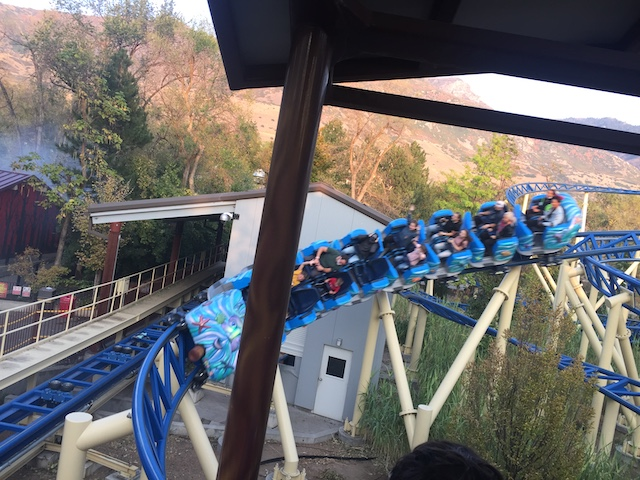
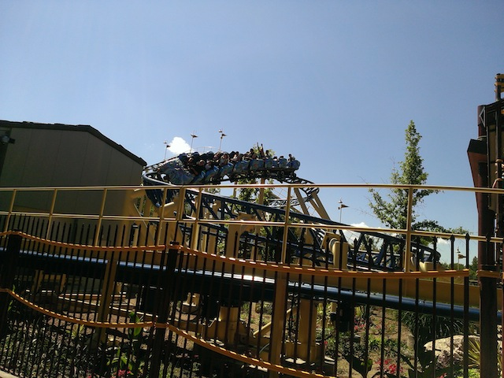
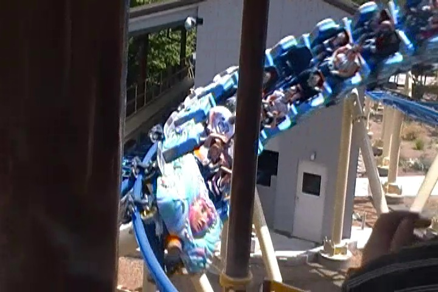

| |
Bombora Review
We're here at Lagoon where's we'll be revewing their Roller Skater. Bombo. Now this is an interesting kiddy coaster. It's actually not a Vekoma Roller Skater. This is a custom kiddy coaster built by the park themselves. Cool. So let's hop in and take a ride. We head around a turn, climb up the lift hill. It's not that big, so let's go down. We go around a turn and down a small drop. Wee. We head into an upward helix. It's fun for a kiddy coaster. We go on down, through another half a helix. We go around this S Curve, snake around, and go around some turns. We just keep on going, twisting, and snaking around until you just go into the brake run. Oh, and I forgot to mention, they play the Beach Boys on the ride. So yeah, it's a kiddy coaster themed to surfing in the mountains of Utah. Hey, I don't mind that. It's definetly one of the better kiddy coaster and almost starts to creep towards that line between kiddy coaster and family coaster. That's always a good thing.
4/10
Location: Lagoon
Opened: 2011
Built by: Lagoon
Last Ridden: September 19, 2020
Bombora Photos




Home
|